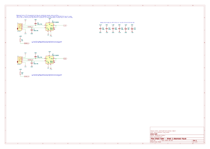
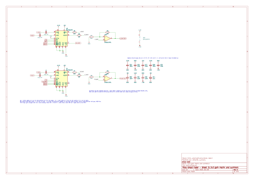
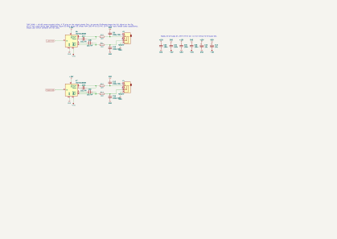
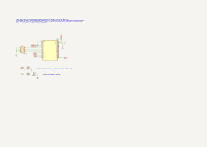
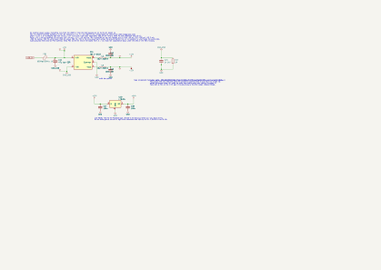
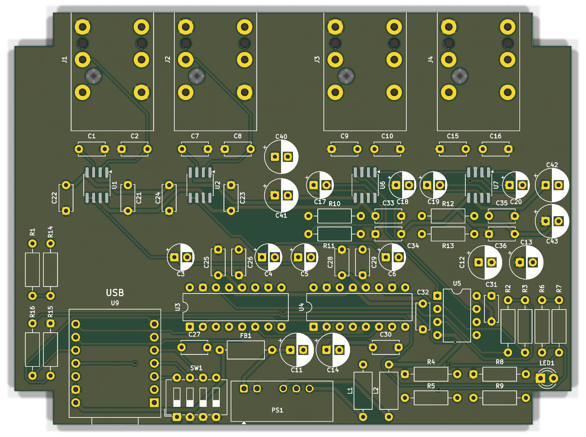
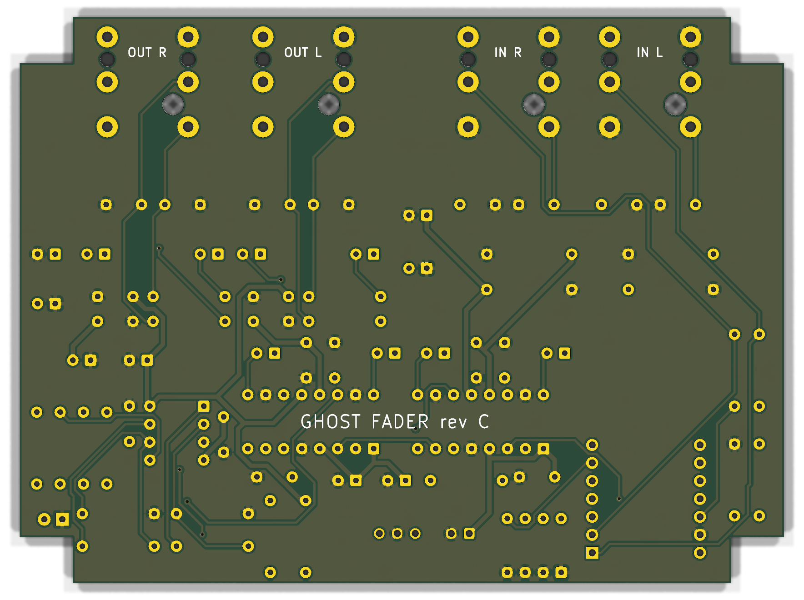
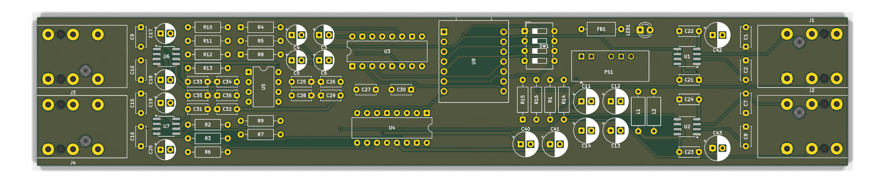
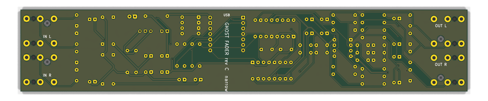

Ghost Fader
USB-MIDI-controlled volume and pan for two balanced ¼″ line channels. Balanced in, always-balanced out, one input becomes stereo automatically. Bus-powered XIAO RP2040 plus a 2×2 gain matrix of PGA2310 attenuators.
USB-MIDI-controlled volume and pan for two balanced ¼″ line channels. Balanced in, always-balanced out, one input becomes stereo automatically. Bus-powered XIAO RP2040 plus a 2×2 gain matrix of PGA2310 attenuators.
Each input goes through a differential line receiver that turns the balanced pair into a clean single-ended signal and rejects cable noise. A plain TS plug just grounds the cold side, so unbalanced sources work with no switch. From there the two signals feed four digitally controlled attenuators arranged as a 2×2 matrix: any input can reach either output at any level. Two op-amp summers add the contributions, and cross-coupled balanced drivers put a true balanced signal on each output jack.
The XIAO RP2040 shows up on the computer as a class-compliant USB MIDI device, works out four gains from volume, pan, and whether the R jack has a plug in it, and writes them over SPI. Because pan and mono-to-stereo are just numbers in the matrix, there is no analog routing switch, no relay click, and a stereo source can be balanced or genuinely image-shifted. The same USB cable powers the box: an isolated DC-DC module turns the 5 V bus into the ±12 V analog rails.
If cross-feed and mono-sum do not matter, drop U4 and the summers and put a DG419 analog switch in front of the second PGA channel: it picks the R receiver when a plug is present and the L receiver when it is not. That saves roughly $18 and one op-amp, at the cost of a small click on plug insertion unless firmware mutes around it.
Sheets 1 to 5 are the readable overview: IC pins are labelled by function and bypass caps are not drawn. The full KiCad schematic further down has datasheet pin numbers, every bypass cap, the 1646 sense caps and the ERC-checked netlist, and is the one to lay a board out from.
| Gain | Chip · channel | Takes | Feeds | Stereo (R plugged) | Mono (R empty) |
|---|---|---|---|---|---|
| a | U3 · L | L_SE | L_SUM | vol × balance-left | vol × cos θ |
| d | U3 · R | R_SE | R_SUM | vol × balance-right | mute |
| c | U4 · L | L_SE | R_SUM | mute | vol × sin θ |
| b | U4 · R | R_SE | L_SUM | mute | mute |
| Load | Current at 5 V | Note |
|---|---|---|
| XIAO RP2040 | ≈ 30 mA | RP2040 at 133 MHz plus its regulator |
| PS1 supplying ≈ 30 mA on each ±12 V rail | ≈ 180 mA | THAT parts, two PGA2310, OPA1642; module about 80 % efficient |
| PGA2310 logic (15 mA each), LED | ≈ 30 mA | |
| Total | ≈ 250 mA typical · ≈ 320 mA worst case | USB 2.0 port allows 500 mA; USB 3 / USB-C ports allow 900 mA or more |
So yes, bus power works, with two conditions:
The complete, layout-ready schematic: datasheet pin numbers on every IC, every bypass and bulk cap, the 1646 sense caps, build-outs and RF caps, all as a five-sheet hierarchical KiCad 9 project. Inter-sheet nets are global labels; rails are power symbols. It passes ERC with zero violations, and the exported netlist was checked pin-for-pin against an independently written connectivity list (53 nets, 233 pins).





hardware/kicad/.A routed board that fits the Hammond 1590BB. Jacks along the rear edge with their noses 1.5 mm past the board so the panel nuts have thread; XIAO USB-C flush with the front edge; DC-DC converter and rail filters front-centre, the far corner from the input receivers; every decoupling cap within a few millimetres of its pin. Ground is a pour on both layers over the ground tracks the router laid first, so the schematic's star point becomes a plane. Power tracks are 0.6 mm, signals 0.3 mm, clearance 0.25 mm. The corners are notched 7.5 × 6.5 mm to clear the box's lid-screw bosses, and the board hangs on the four jack nuts. DRC is clean against the schematic. Placement is a table in tools/build_pcb.py; routing is Freerouting via tools/route.py.


A second, independent board for the same schematic, shaped for a signal chain: inputs on the right end, outputs on the left, USB out of the middle of the rear edge. It is as narrow as two jacks side by side allow (18 mm pitch) plus a little edge clearance; the XIAO lies across the board with its USB-C at the rear edge. It wants a 3D-printed box, about 40 × 210 mm inside with a ledge under the long edges; the four jack nuts hold the board. Parts run in columns along the length: drivers and summer behind the output jacks, the two PGA2310s stacked across the board with their SPI rows facing each other, XIAO, switch and pull-ups, DC-DC and filters, receivers behind the input jacks. Same rules as the main board, DRC clean against the schematic. Placement is a table in tools/build_pcb_narrow.py. The 1590BB board above is unchanged.


| Point in chain | Nominal | Peak | Limit there |
|---|---|---|---|
| Balanced input | +4 dBu · 1.23 Vrms | +22 dBu · 9.8 Vrms | THAT 1246 common-mode ±10 V on ±12 V rails |
| After U1 (−6 dB) | 0.61 Vrms | 4.9 Vrms | PGA2310 full scale about 7.4 Vrms on ±12 V, so 3.6 dB spare at peak |
| After summer (×2 on a ½ divider) | 0.61 Vrms | 4.9 Vrms | OPA1642 swings ±10 V |
| Balanced output (+6 dB differential) | +4 dBu | +22 dBu | THAT 1646 clips near +22 dBu on ±12 V (+24 on ±15), the tightest point in the chain |
| Unbalanced TS source at 0 dBV | 0 dBV in → 0 dBV differential out | Tip-only destination sees −6 dB; use the trim CC |
Net gain balanced-in to balanced-out is 0 dB with the PGA at code 192. The PGA can add up to 31.5 dB, so a quiet −10 dBV consumer source can be brought up to line level without touching hardware.
| CC | Function | Mapping |
|---|---|---|
| 7 | Volume | 127 = 0 dB, 0 = mute, 40·log10(v/127) dB between |
| 10 | Pan | 64 = center. Mono: constant-power pan. Stereo: balance, center is 0 dB both sides |
| 14 | L input trim | ±12 dB, 64 = 0 dB (lift unbalanced sources) |
| 15 | R input trim | ±12 dB, 64 = 0 dB |
| 85 | Mono sum | ≥ 64: both inputs summed at −6 dB each, then panned |
| 120 | Mute | Any value: hard mute via /MUTE pin |
| XIAO pin | Signal | Goes to |
|---|---|---|
| USB-C | MIDI in, 5 V in | host computer |
| 5V | USB 5 V out | FB1, PS1, PGA VD |
| 3V3 | 3.3 V out | R1, R14 pull-ups |
| D0, D1 · GP26, GP27 | SENSE_L, SENSE_R | J1, J2 ring-normal |
| D2–D5 · GP28, GP29, GP6, GP7 | MIDI channel | SW1, INPUT_PULLUP |
| D9 · GP4 | Activity LED | R16, LED1 |
| D6 · GP0 | /MUTE | U3, U4 |
| D7 · GP1 | /CS | U3, U4 |
| D10 · GP3 · MOSI | SDI | U3 (chains to U4) |
| D8 · GP2 · SCK | SCLK | U3, U4 |
Gain code per PGA channel is N = 192 + 2·dB, clamped to 0–255, with 0 meaning mute. Each PGA takes a 16-bit word, right channel byte first. With two chips daisy-chained the XIAO sends U4's word, then U3's, in one chip-select frame:
// a,d live in U3 (L,R); c,b live in U4 (L,R)
uint8_t code(float dB){ if (dB < -95.5f) return 0; return (uint8_t)constrain(192 + 2*dB, 1, 255); }
void writeMatrix(float a, float b, float c, float d){
SPI.beginTransaction(SPISettings(1000000, MSBFIRST, SPI_MODE0));
digitalWrite(CS, LOW);
SPI.transfer(code(b)); SPI.transfer(code(c)); // U4: R byte, then L byte (shifts through to U4)
SPI.transfer(code(d)); SPI.transfer(code(a)); // U3: R byte, then L byte
digitalWrite(CS, HIGH);
SPI.endTransaction();
}
// mono mode: theta = pan/127 * PI/2; a = vol*cos(theta); c = vol*sin(theta); b = d = mute| Ref | Qty | Part | Description | ≈ $ ea | Alternates and notes |
|---|---|---|---|---|---|
| Audio | |||||
| U1, U2 | 2 | THAT 1246S08 | Balanced line receiver, −6 dB, SO-8 | 5.50 | TI INA137UA is drop-in-similar. THAT 1240 (0 dB) if you would rather pad in firmware |
| U3, U4 | 2 | TI PGA2310PA | Stereo volume control, ±12 V analog, SPI, DIP-16 | 11.00 | PGA2310UA is the SOIC-16. Not PGA2311 (±5 V, too little headroom) |
| U5 | 1 | TI OPA2134PA | Dual JFET audio op-amp, DIP-8 | 4.00 | NE5532P works, slightly more noise. OPA1642 if you go SOIC |
| U6, U7 | 2 | THAT 1646S08 | Cross-coupled balanced line driver, +6 dB, SO-8 | 5.50 | TI DRV134UA is the equivalent |
| J1, J2 | 2 | Neutrik NRJ6HF | ¼″ TRS PCB jack, horizontal, tip and ring switching contacts | 3.00 | Any TRS jack with a ring-normal contact; the switch is the plug sense |
| J3, J4 | 2 | Neutrik NRJ6HF | ¼″ TRS PCB jack (switch contacts unused) | 3.00 | Same part keeps the panel uniform |
| C3–C6, C17–C20 | 8 | 10 µF non-polar | Bipolar electrolytic, 25 V. C3–C6 couple into the PGAs; C17–C20 are the THAT 1646 sense caps | 0.40 | Nichicon UES / MUSE ES. The sense caps cut output DC offset from 250 mV to 15 mV (1646 datasheet fig. 5) |
| C1, C2, C7–C10, C15, C16 | 8 | 100 pF C0G | RF caps at every jack tip and ring | 0.10 | Return to chassis / sleeve, shortest path |
| R2–R9 | 8 | 10 kΩ 1% | Summing and feedback, metal film | 0.05 | Match within a summer for a clean mono sum |
| R10–R13 | 4 | 10 Ω | Output build-out | 0.05 | |
| R1, R14 | 2 | 1 MΩ | Plug-sense pull-ups to 3.3 V | 0.05 | Do not enable the XIAO's internal pull-ups on D0, D1 |
| Control | |||||
| U9 | 1 | Seeed XIAO RP2040 | MCU, USB-C, class-compliant USB MIDI via TinyUSB, on header pins | 5.00 | Its 5V pin is USB VBUS and feeds the board. The schematic numbers its pins 1–14 as Seeed's footprint does |
| R15, R16 | 2 | 10 kΩ, 1 kΩ | Mute pull-down, LED series | 0.05 | |
| SW1 | 1 | 4-way DIP switch | MIDI channel 1–16 | 0.80 | |
| LED1 | 1 | 3 mm LED | MIDI activity | 0.15 | |
| CABLE | 1 | USB A or C to USB-C | Data cable, not a charge-only cable | 3.00 | Short and thick keeps the 5 V drop small |
| Power | |||||
| PS1 | 1 | Traco TBA 2-0522 | Board-mounted isolated DC-DC, 4.5–5.5 V in, ±12 V 80 mA out, 2 W, unregulated, SIP-7 | 5.00 | Fed from USB 5 V; not an external supply. Any industry-standard SIP-7 2 W ±12 V module (Mornsun B0512, RECOM RB-0512D) has the same pinout. Not a ±12 V part: its light-load rise would pass the PGA2310's 16 V limit. Budget ≈ 30 mA per rail |
| FB1 | 1 | Ferrite bead, 600 Ω @ 100 MHz, ≥ 1 A | Keeps converter switching noise off the USB line | 0.20 | |
| L1, L2 | 2 | 10 µH, ≥300 mA | Rail filter inductors | 0.40 | |
| C11 | 1 | 47 µF 10 V low-ESR | USB-side reservoir for PS1 | 0.25 | Keep it modest; USB frowns on big inrush |
| C12, C13 | 2 | 100 µF 25 V | ±12 V rail filters | 0.25 | |
| C14 | 1 | 10 µF | 5 V logic rail | 0.10 | |
| C21–C36 | 16 | 100 nF X7R | One at every supply pin of U1–U7 | 0.05 | Within 5 mm of the pin |
| C40–C43 | 4 | 10 µF 25 V | ±12 V bulk, one pair at the input end and one at the output end | 0.10 | |
| Mechanical | |||||
| ENC | 1 | Hammond 1590BB | Die-cast aluminium, 119 × 94 × 34 mm | 12.00 | 1590DD if you want a hand-solderable spread |
| PCB | 1 | 2-layer, 108 × 80 mm | Routed, ground pour both sides, jacks on the rear edge, DC-DC on the far edge; gerbers in the repo | 10.00 | 5 boards from JLCPCB or OSH Park |
| Estimated total, one unit at single-piece prices | ≈ 110 | ≈ 100 with the narrow board in a printed box. Cost-down variant (one PGA2310 + DG419): ≈ 90 | |||